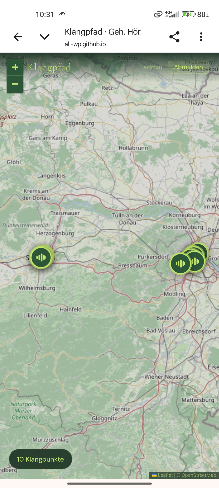
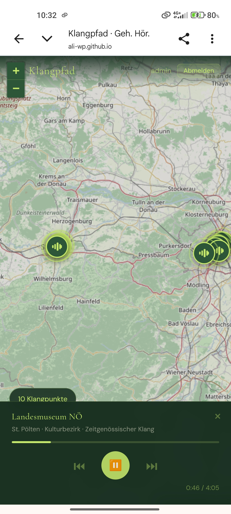
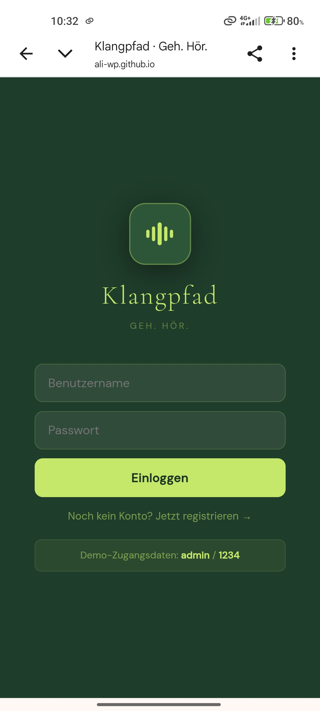

Eine mobile Web-App, die Hörspiele am jeweiligen Handlungsort freischaltet — Nutzer:innen bewegen sich entlang realer Wander- und Spazierrouten und hören die passende Klangkulisse genau dort, wo sie entsteht.
Klangpfad entstand im Auftrag von Kilian Zachhuber (USTP) im Rahmen der Lehrveranstaltung „Tun/Forschen/Gründen". Ziel war eine App, die an der USTP produzierte Hörspiele über einen integrierten Audioplayer wiedergibt — freigeschaltet über eine interaktive Landkarte, sobald sich Nutzer:innen dem jeweiligen Handlungsort nähern.
Ich habe die App eigenständig konzipiert, entwickelt und umgesetzt: von der Kartenansicht über die Standorterkennung bis zur ortsabhängigen Audiowiedergabe. Zusätzlich zum ursprünglichen Briefing habe ich ein vollständiges Registrierungs-, Login- und Logout-System ergänzt, um die App zu einem runden, eigenständigen Produkt zu machen.
Das Ergebnis ist ein stabiles, vollständig getestetes MVP mit responsivem Design für Mobile und Desktop — live erreichbar über GitHub Pages.
Eine vollflächige Karte (Leaflet / OpenStreetMap) zeigt alle Klangpunkte entlang der Routen in Wien und St. Pölten. Jede Markierung ist eine hörbare Station.

Tippt man eine Station an, startet die passende Klangkulisse — hier am Landesmuseum Niederösterreich — direkt im integrierten Player, mit Fortschrittsanzeige und Steuerung.

Eine eigenständige Erweiterung über das ursprüngliche Briefing hinaus: Nutzer:innen können sich registrieren und anmelden, um ihren Fortschritt entlang des Klangpfads zu behalten.
